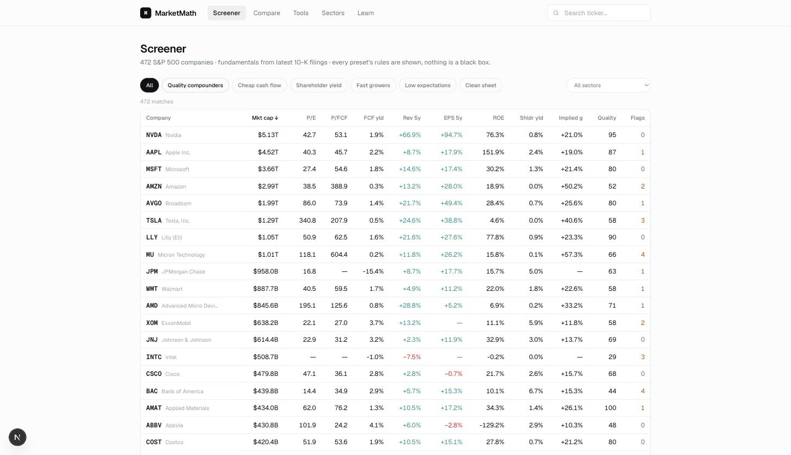
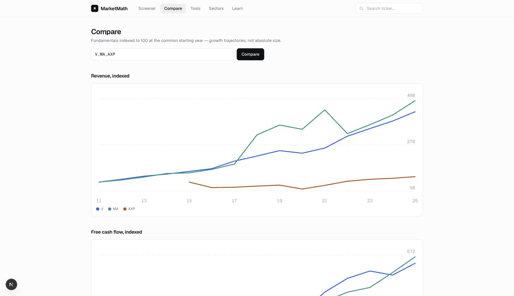
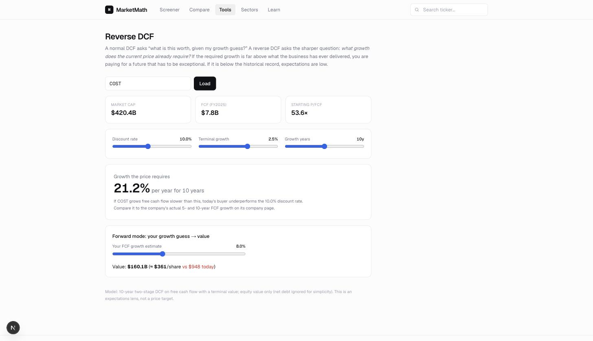
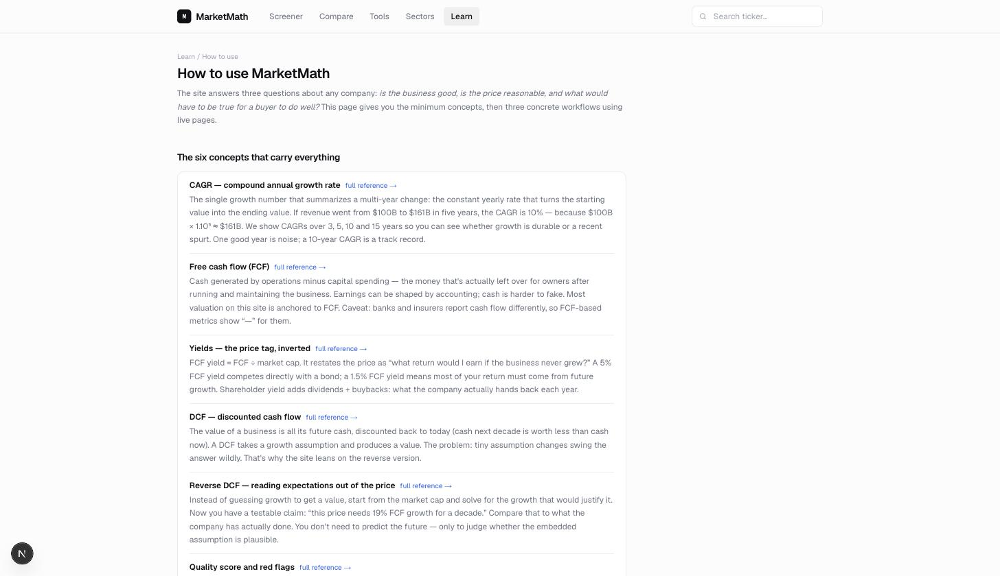

What today's price assumes, next to what happened.
A fundamentals dashboard for the S&P 500. Twenty years of as-filed 10-K numbers per company, the valuation math built on top of them, and every threshold printed in the open.
A price is a forecast. This shows you the forecast.
Most screeners will tell you a stock looks cheap or expensive. They rarely tell you what that price is assuming. Finding out means opening a decade of 10-Ks, copying numbers into a spreadsheet, fixing the split adjustments by hand, and quietly giving up around the third company.
Market Math ingests XBRL companyfacts from SEC EDGAR, resolves twenty years of as-filed 10-K figures per company, and derives about forty metrics into Postgres. Then it states, in one sentence, the free-cash-flow growth rate today's market cap requires — next to what the business actually delivered.
What today's price assumes. At $4.52T, the market is pricing in 19.0% annual free-cash-flow growth for the next decade. Over the last ten years, FCF actually grew 3.5% per year.
The panel as it renders on the Apple page. That gap is the whole argument.
Tour
The four screens that do the work
marketmath-theta.vercel.app/screener

/screener
Presets that show their rules
Six presets, each printing the thresholds it filters on. Sort any column to sharpen the list, then shortlist and take the survivors to their company pages one at a time.
Quality compounders, Cheap cash flow, Fast growers
Low expectations: implied growth at or below 4%
Clean sheet: companies with zero red flags
marketmath-theta.vercel.app/compare

/compare
Rivals on the same axis
Up to six tickers, indexed to 100 at their common start year, so trajectory shows rather than size. Revenue, free cash flow and share count, plus a sales-efficiency table.
Falling share count reads as buybacks
New PP&E per $1 of new revenue, side by side
marketmath-theta.vercel.app/tools/reverse-dcf

/tools/reverse-dcf
Argue with the assumptions
Drag the discount rate, terminal growth and horizon; the growth the price requires updates live. Forward mode runs it the other way, turning your own growth guess into a per-share value.
Ten-year two-stage DCF on free cash flow
An expectations lens, not a price target
marketmath-theta.vercel.app/learn/how-to-use

/learn
The math, written down
Forty metric docs — formula, why it matters, thresholds, caveats — and six guides on reading a 10-K, quality, valuation, expectations, red flags and capital allocation.
A how-to-use walkthrough for the whole workflow
Design choices and alternatives written up in /about
How it works
From a shortlist to a question for the filing
The sequence the app is built around, and the order the how-to-use guide walks you through.
01
Pick a preset
Open the screener, choose a preset, read the rules it prints, sort a column, and keep the handful of tickers worth an hour.
02
Read the argument
A company page is ordered as an argument: classification and quality score, then what the price assumes, then the twenty-year record underneath it.
03
Test the gap
Move the reverse-DCF sliders until the required growth looks defensible. If it never does, the price is asking for a future nobody has delivered.
04
Take it to the 10-K
Red flags are threshold checks, not verdicts. Each one is a question, and the filing it came from is linked at the bottom of the page.
Features
What's actually in it
Reverse DCF
The FCF growth rate today's market cap requires, stated in one sentence beside the growth actually delivered.
Quality score
A mechanical 0–100 score with a red-flag count next to it. Both print the rules they were computed from.
Twenty-year history
Revenue, net income, free cash flow, share count, margins, capital returned, and cash against debt.
Track record
CAGRs over 3, 5 and 10 years, $100 against SPY over four horizons, and Buffett's $1 retained-earnings test.
Capital discipline
Cash ROIC, debt measured in years of free cash flow, stock comp as a share of FCF, and sales efficiency.
Six screener presets
Quality compounders, cheap cash flow, shareholder yield, fast growers, low expectations, and zero red flags.
Everything traces back
Every figure resolves from 10-K forms only, split-adjusted, with the source filing linked from the company page.
Forty metric docs
Each metric has a page: the formula, why it matters, sensible thresholds, and where it misleads you.
Built with
The stack, and where the data comes from
Next.js 16
React 19
TypeScript
Tailwind CSS v4
Supabase Postgres
Vercel
SEC EDGAR XBRL
Yahoo Finance v8
Hosted on Vercel, data in Supabase Postgres with public read and service-role write. Vercel crons refresh prices on weekday evenings and rotate fundamentals through the universe weekly. Pages read the database only — no external API is called while you are looking at one.
FAQ
Reasonable questions
Is this investment advice?
No. It is a personal project I built to read filings faster, and nothing on it is a recommendation to buy or sell anything. I am not a financial adviser. Every number is a starting point for your own reading of the 10-K.
Is it free? Do I need an account?
Free, and there is no sign-in at all. No accounts, no paywall, no ads, no analytics. It reads public SEC data and runs on hosting I already pay nothing for.
Where do the numbers come from?
SEC EDGAR XBRL companyfacts for fundamentals — 10-K forms only, with tag-fallback chains and split adjustment — plus Yahoo Finance v8 for prices and SPY. Wikipedia supplies the S&P 500 membership list.
Why only 500 companies, and why no quarters?
S&P 500 only, annual data only. Nothing updates until the next 10-K. Split adjustment is inferred, so it is approximate, and prices are delayed rather than live.
Does it work on a phone?
Yes — it is responsive with a bottom nav, and a web manifest lets you add it to a home screen. There is no offline mode, so it needs a connection. Wide tables scroll sideways.